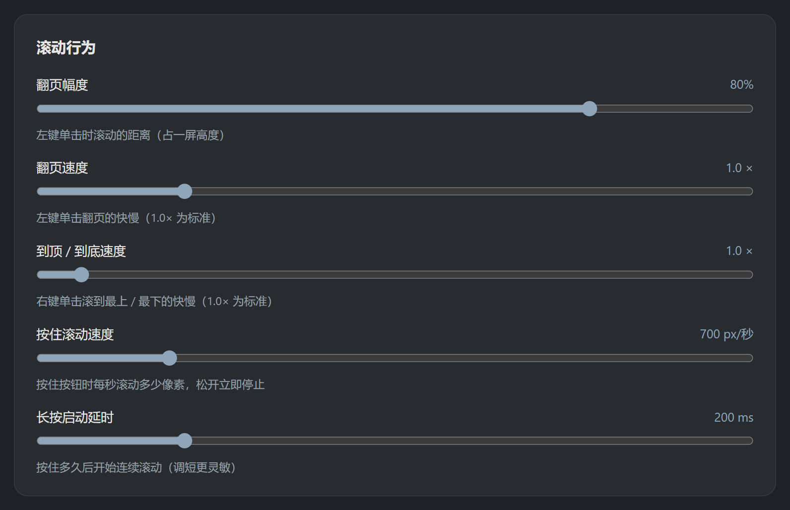

每个细节，
都能按你的习惯调
设置自动保存、即时生效；设置只存在本机，随时可一键备份恢复

设置页 · 滚动行为（翻页幅度 / 各段速度 / 按住参数）
翻页幅度
10% – 100%，默认刚好一屏的 80%
速度全可调
翻页 / 到顶到底 0.5–10×，按住滚动 200–3000 px/秒
外观与位置
36 款样式 · 6 大分类 · 圆形 / 圆角 · 大小、透明度自由调
网站排除
不想看到按钮的站点，加进名单即可（含子域名）
备份与恢复
导出设置文件，重装浏览器一导入就还原
反馈直通
设置页内置反馈入口，建议直达开发者邮箱